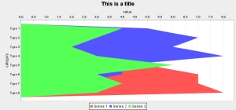

The goal of this project is to develop a Groovy Builder to create rich Swing and HTML Charts using JFreeChart.
GroovyChart is similar to the SwingBuilder class in Groovy that allows for an easy and intuitive development paradigm for Swing GUI applications. SwingBuilder accomplishes this by providing a simplified api ontop of the Swing API, that mirrors the top down topology of the Swing component tree.
GroovyChart expands on this concept to provide a tree structure for laying out the components that make up displayable charts and graphs.
One of the goals of this project is to create a demo application, similar to the downloadable demo from JFreeChart, that is totally written using Groovy and GroovyBuilder.
To start, first, become famliar with the dynamic language for for the Java Platform, Groovy, and the concepts of GroovyBuilders. A good book for understanding Groovy and SwingBuilder is Groovy In Action, by Dierk Koenig with Andrew Glover, Paul King, Guillaume Laforge and Jon Skeet, Manning Publications, 2007.
Second, become familiar with JFreeChart. A good starting point is to download the JFreeChart DeveloperGuide($$$), but this is not necessary to run GroovyChart.
Right now GroovyChart is in development, but you can download the existing code source by accessing it from CVS. GroovyChart is developed as a Netbeans project and can be built by mounting the the source directory as a project. 
An simple view of GroovyChart is:
import net.java.dev.groovy.chart.ChartBuilder
import org.jfree.chart.plot.PlotOrientation
import org.jfree.chart.JFreeChart
import org.jfree.chart.ChartPanel;
import java.awt.BorderLayout
import groovy.swing.SwingBuilder;
import java.awt.Dimension
ChartBuilder builder = new ChartBuilder();
def areachart = builder.areaChart(title:'This is a title',
categoryAxisLabel:'category',
valueAxisLabel:'value',
orientation:PlotOrientation.HORIZONTAL,
legend:true,
tooltips:false,
urls:false
) {
defaultCategoryDataset(){
addValue(1.0, row:'Series 1', column:'Type 1')
addValue(4.0, row:'Series 1', column:'Type 2')
}
def chartPanel = new ChartPanel(areachart.chart, false);
chartPanel.setPreferredSize(new Dimension(1000, 500));
chartPanel.setMouseZoomable(true, false);
SwingBuilder swing = new SwingBuilder();
def frame = swing.frame(
title:'This is a Frame',
location:[100,100],
size:[800,400],
defaultCloseOperation:javax.swing.WindowConstants.EXIT_ON_CLOSE);
frame.getContentPane().setLayout(new BorderLayout());
frame.getContentPane().add( chartPanel, java.awt.BorderLayout.CENTER);
frame.setVisible(true)
|
If you're interested in contributing, you can file bugs/RFEs or subscribe to our mailing list. If you're really interested, we'd welcome any developers who wanted to roll up their sleeves and participate; in particular ones who already use Groovy and JFreeChart. Check out Membership to request a role.